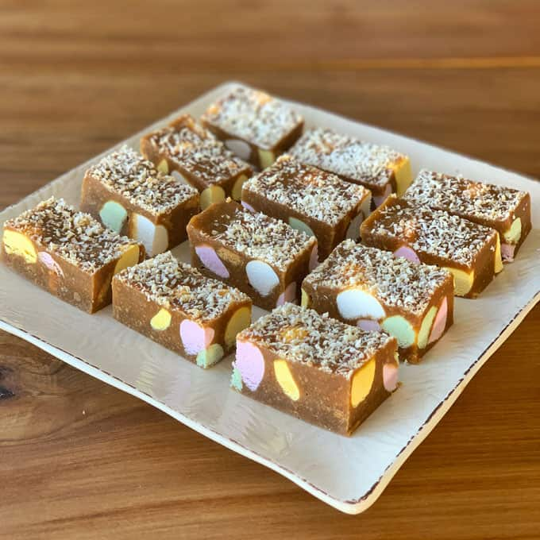

sweet treat
Lolly Cake
Classic Kiwi Treat Made With Biscuits, Lollies and Coconut
A simple no-bake New Zealand favourite made with crushed biscuits, condensed milk, butter, Explorers lollies and coconut.
What You'll Need
Ingredients
Lolly Cake
- 80g butter, chopped into pieces
- ½ cup (160g) condensed milk
- 1 packet (250g) malt biscuits, crushed
- 1 packet (150g) explorers, chopped
- 2 Tbsp desiccated coconut
Time To Cook
Method
Make the Mixture
Place the butter and condensed milk into a large microwave-safe bowl.
Microwave for 1 minute.
Leave to sit for 1 minute, then whisk until the butter has completely melted and the mixture is smooth.
Crush the malt biscuits and add them to the butter and condensed milk mixture.
Mix until combined.
Chop the Explorers into smaller pieces and add them to the mixture.
Shape the Lolly Cake
Turn the mixture out onto a clean surface.
Form the mixture into one large log or two smaller logs.
Use your hands to tightly pack the mixture together.
Roll the log/s in the desiccated coconut, making sure they are covered all over.
Wrap the logs tightly in Glad Wrap.
Chill and Serve
Place the wrapped lolly cake in the fridge to chill for at least 2 hours or overnight until firm.
Once set, remove the lolly cake from the fridge and unwrap it.
Using a sharp knife, cut the lolly cake into slices approximately 2 cm thick.
Serve immediately or store in an airtight container in the fridge.
Source & Credits
Recipe & Image Credits
Recipe & Image Source
VJ Cooks
This Lolly Cake recipe and the images used on this page were originally published by VJ Cooks.
View Original Recipe & ImagesRecipe creators and image sources are credited to acknowledge the original creators of the content used on this page.